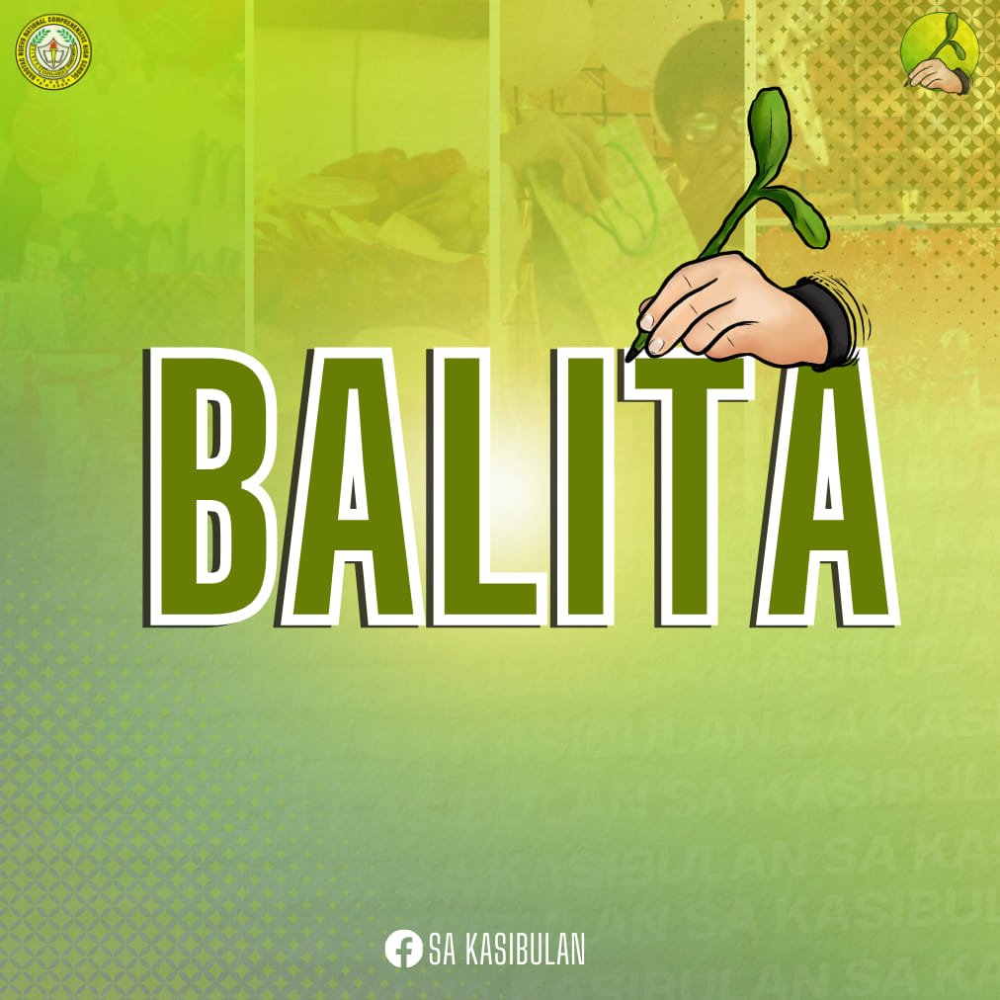

𝗕𝗮𝗹𝗶𝘁𝗮 | ğ‚ğ¡ğ«ğ¢ğ¬ğğ¦ğšğ¬ ğğšğ«ğğ², 𝐌𝐚𝐬𝐚𝐲𝐚𝐧𝐠 ğˆğ©ğ¢ğ§ğšğ ğğ¢ğ«ğ¢ğ°ğšğ§ğ 𝐧𝐠 𝐁𝐍𝐍𝐂𝐇𝐒
Published on: December 17, 2023
Ni: Kenjie Marie Bernil
Article content goes here...
Kasabay sa paparating na pasko, Idinaos ng Barotac Nuevo National Comprehensive High School (BNNCHS) ang kanilang Christmas Party, upang magpalaganap ng pagmamahalan at kasiyahan sa lahat na hindi makakalimutan para sa mga Comprehenians. Ginanap ito nito lamang Disyembre 15, 2023 sa pamamagitan ng pagsalo-salo, paglalaro, at pagpapalitan ng regalo.
Subong nakita ko gd nga masadya ang mga kabataan, happy ako, beyond happiness" masayang sabi ni Maria Jemelli Parreñas, isang guro sa BNNCHS.
Nagtapos ang araw na puno ng masasayang ala-ala kasama ang kanilang mga kaklase at guro. Isa itong magandang pagdiriwang para sa kanila upang magkaisa at magkaruon ng saya. Umuwi ang mga mag-aaral at guro na may dalang ngiti at saya sa kanilang mga mukha.
𝐊𝐮𝐡𝐚 𝐧𝐢𝐧𝐚: Angela Grace Lozada, Marthaena Engrid Matillano, Shane Yvonne Basindanan, Jedriel Brent Matillano
𝐋𝐚𝐲-ğ¨ğ®ğ 𝐧𝐢: Gabrielle Dedoroy